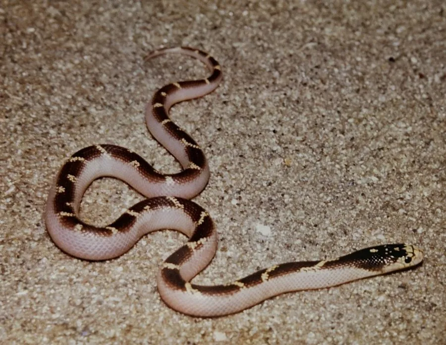

爬行动物 · 动物界
加州王蛇 Lampropeltis californiae

北美西部的无毒游蛇，能以响尾蛇为食而不中毒，黑白环纹醒目、体质强健，是常见且容易饲养的宠物蛇之一。
- 分类
- 门脊索动物门纲爬行纲目有鳞目科游蛇科属王蛇属
- 栖息环境
- 美国西部与墨西哥西北部的草原、荒漠、灌丛和岩质丘陵
- 地理分布
- 美国加利福尼亚、俄勒冈南部及墨西哥下加利福尼亚半岛
- 保护级别
- IUCN 无危（LC）；非中国原产，在中国无保护级别
物种志
加州王蛇体长 0.8–1.5 米，身体较粗壮，头部略宽，典型个体为黑色底色上分布白色或黄色的环带，环带在腹部常连成一片；也有条纹型和无纹型等色型，鳞片光滑。
它分布于美国加利福尼亚州、俄勒冈州南部及墨西哥下加利福尼亚半岛的草原、荒漠和灌丛中，多在白天活动，捕食鼠类、蜥蜴、蛙类和其他蛇类，对响尾蛇的毒液具有免疫力，会主动捕食响尾蛇。每年 3–5 月繁殖，雌蛇产卵 5–20 枚，孵化期约 55–70 天。它性格活跃、适应力强，是宠物蛇市场的常见物种，人工繁殖个体供应稳定、饲养门槛较低；在中国它属于外来物种，饲养者不可随意放生。
形态与习性
- 食性鼠类、蜥蜴、蛙类和其他蛇类
- 体长0.8–1.5 m
- 体重约 300–600 g
- 寿命约 15–20 年
- 繁殖卵生，每窝 5–20 枚，孵化 55–70 天
- 活动节律昼行性，常在岩石间活动
- 特点对响尾蛇毒液具有免疫力
趣味知识
- 加州王蛇能捕食响尾蛇，对响尾蛇毒液具有天然免疫力。
- 它的环带花纹常被误认为珊瑚蛇，但两者分布区域并不相同。
- “王蛇”之名来自它捕食其他蛇类的习性，是蛇类中的“王者”。